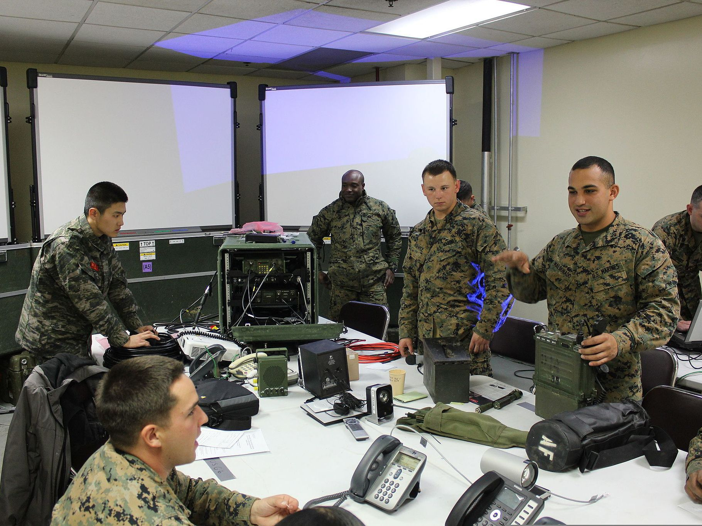
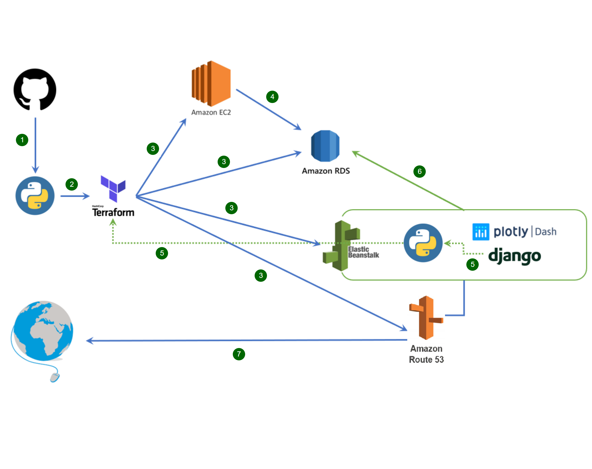

Professional
Click on the images for details.
Booz Allen Hamilton, Feb 2020 - Oct 2020. Lead Operations Research Analyst for development on the Common Workforce Analysis Tool (CWAT), a workforce-workload analysis tool (Excel) utilized by many branches within the government involved in Foreign Military Sales. Tasks included frequent client interactions and demos, orchestrating large scale changes to the existing tool to meet the client's changing needs, and leading other supporting analysts in the effort. Python, Excel, Data visualization, Jira.
*Won award on the project for consistently successful explanations to the client and for bringing strong programming leadership to the team by introducing code review sessions and Python best-practices.">
*Won award on the project for consistently successful explanations to the client and for bringing strong programming leadership to the team by introducing code review sessions and Python best-practices.">
Booz Allen Hamilton, Feb 2020 - June 2020. Led development of Excel-based, goal-programming tool to address the best way to distribute linguists within the Navy and Marine Corps. Integrated open-source tools to expand the capabilities of Excel's 'solver' to meet the scale of the optimization problem.
*Won award on the project for implementation effectiveness, ability to communicate the concepts of the algorithm to both teammates and clients, and for smooth model runs throughout the projects lifecycle.">
*Won award on the project for implementation effectiveness, ability to communicate the concepts of the algorithm to both teammates and clients, and for smooth model runs throughout the projects lifecycle.">
Booz Allen Hamilton, July 2019 - Jan 2020. Developed data pipelines, analysis, and novel visualizations for the Fairfax County Fire & Rescue team. Effort was to recommend a redistribution of emergency vehicles in order to better minimize average response times to incidents. Major tools used were Python and Tableau.
*Won award on the project for novel visualizations and efficient data pipelining.">
*Won award on the project for novel visualizations and efficient data pipelining.">

Recreational
My personal projects that I work on in my free time.
Ebuy Project (For lack of a better name). Developing predictive model to understand what drives selling price of the item 'Super Smash Bros Melee' up on Ebay. Built a webscraper to periodically obtain new data from Ebay and a data pipeline that feeds cleaned data into a PostgreSQL database. Modeled selling price using both a Lasso-penalized regression to assess which features drive price and a gradient boosted regression tree (CatBoost) to better predict selling price. Data types included text, images, and real valued numbers.">
custom stacking CNN model to predict images from the Dogs vs Cats dataset, achieving total accuracy (balanced dataset) of just over 94%, a notable accomplishment on this dataset. Wrote an article on Medium documenting the process and providing intuition for the idea of stacking models.">
GitHub page.">